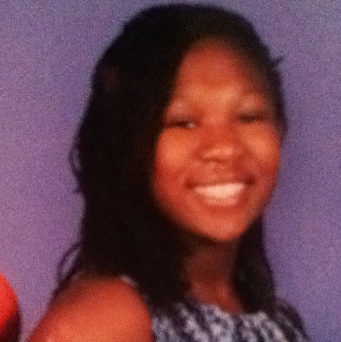
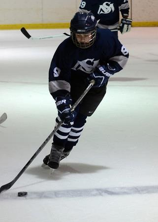

Chloe Chidera EnePosition: Executive Producer/Music Director About the show: It's incredible how much we've done in such a short time. Every person in the class put in a lot of time and effort. I think this show has a lot of potential. Favorite joke in the Writers' room: Jo spills about her entire life. Joseph goes "That's lovely" and Payton |
|
|  |
Jasmine WilliamsPosition:Writer, script coordinator. About the show:The show has developed into something much more complex than we had previously imagined. Favorite joke in the Writers' room: "You're soo lucky." |
Sarah RobertsonPosition:Writer, auditor. About the show:I have enjoyed collaborating to produce an interesting show Favorite joke in the Writers' room: "Dance!". |
|
Payton NugentPosition: Writer and Casting Co-Director About the show: Gaslight is a really cool show. It plays on the psychology that can only be accessed in the deepest corners of the human mind. In that it is the only show of its kind. Favorite joke in the Writers' room: Dance! |
|
Aigerim BishigayevaPosition: Writer, I.T. About the show: ...I've definitely haven't done anything like this before. Writers' room dynamic is creatively horrifying. Like a volcano eruption. Favorite joke in the Writers' room: Whatever makes Jasmine leave the room/fight Mr Camp. |
|
Maddy FalzonePosition: Writer, trailer producer. About the show: Gaslight is the most gaslit show out there. The action and thrill the show brings in a sci-fi and mysterious way is something that puts our show over the edge. Favorite joke in the Writers' room: Jose. Rhymes with nose. Not JosE. |
 |
Jasen RipleyPosition: Writer, I.T., inspiration and character consultant About the show:I cry everytime I think about in. In a good way. Favorite joke in the Writers' room: "Let's make Jasen cry again!" |
Justin ElkinsonPosition: Writer and Co-Director of Marketing. About the show: I love the show! Brainstorming ideas in the Writers' Room and writing Gaslight episodes was a lot of fun. Favorite joke in the Writers' room: #Hardcore Gaslit. When I said it for the first time I was roasted, and now it is one of the classes favorite term. |